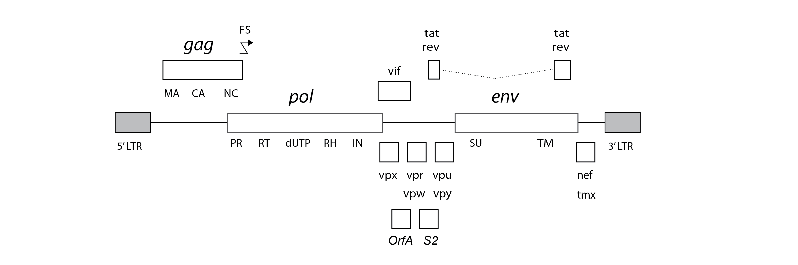
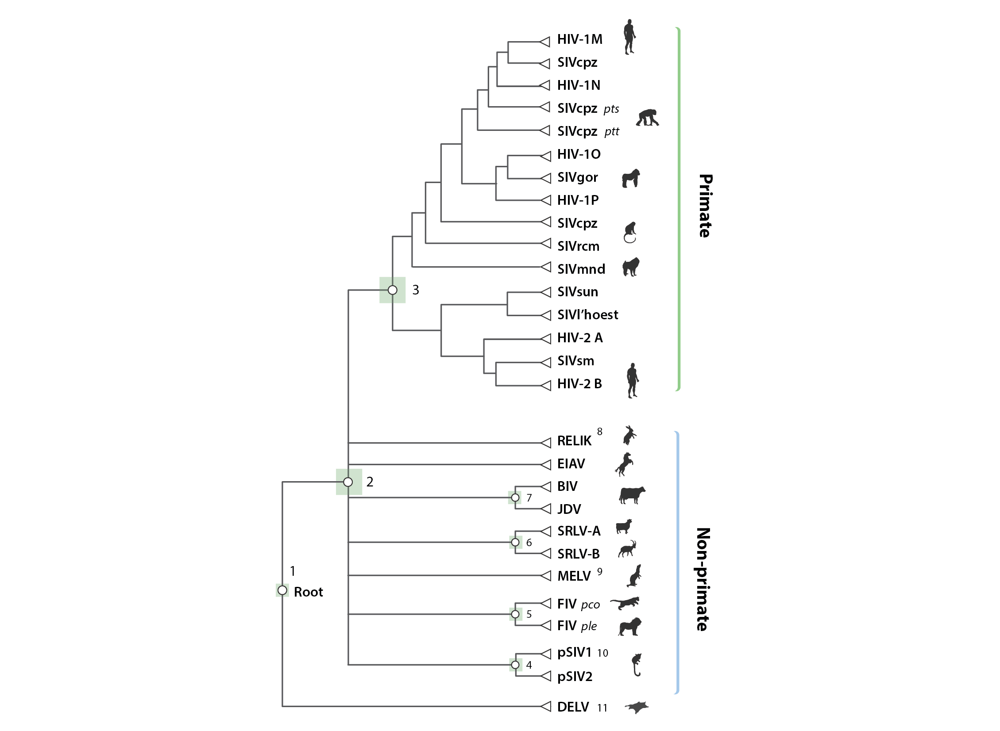

Comparative genomic analysis of lentiviruses using Lentivirus-GLUE
This page provides background information on the virus-associated data items included in the project - information about endogenous lentiviral sequence data included in Lentivirus-GLUE can be found here.
Lentivirus genome features
In their integrated DNA form - referred to as a 'provirus' - retrovirus genomes are flanked at either side by identical long terminal repeat (LTR) sequences, each of which is composed of distinct U3, R and U5 regions.

Lentiviruses typically encode a range of ‘accessory’ genes in addition to the fundamental gag, pol and env genes encoded by all retroviruses. Among these, the rev gene is thought to be encoded by all lentiviruses, while tat is encoded by all except SRLVs and FIVs. Numerous other accessory genes have been defined, but the evolutionary relationships between these genes are not well characterised.
We defined a standard set of genome features for lentiviruses, reflecting current knowledge, and incorporated this information into Lentivirus-GLUE.
Lentivirus reference sequences
Lentivirus-GLUE contains GLUE reference sequences for all known lentivirus species. Reference sequences are linked to auxiliary data in tabular format.
For each lentivirus species, we have created a 'master' reference sequence, as follows:
Primate group
- Human immunodeficiency virus type 1: (AF033819)
Equine group
- Equine infectious anemia virus (Am): (AF016316)
- Equine infectious anemia virus (Eu): (JX480632)
- Equine infectious anemia virus (As): (AF327877)
Small ruminant group
- Small ruminant lentivirus (genotype A): (NC_001452)
- Small ruminant lentivirus (genotype B): (NC_001463)
- Small ruminant lentivirus (genotype C): (AF322109)
- Small ruminant lentivirus (genotype B3): (JF502416)
- Small ruminant lentivirus (genotype E1): (EU293537)
Feline group
- Feline immunodeficiency virus: (M25381)
- Feline immunodeficiency virus Pco: (EF455613)
- Feline immunodeficiency virus Oma: (U56928)
Bovine group
We defined the locations of lentivirus genome features on master reference sequences (see here).
Multiple sequence alignments (MSAs)
Multiple sequence alignments (MSAs) are the basic currency of comparative genomic analysis. MSAs constructed in this study are linked together using GLUE's constrained MSA tree data structure.
A 'constrained MSA' is an alignment in which the coordinate space is defined by a selected reference sequence. Where alignment members contain insertions relative to the reference sequence, the inserted sequences are recorded and stored (i.e. sequence data is never deleted).
GLUE projects have the option of using a data structure called an alignment tree to link constrained MSAs representing different taxonomic levels, and we've used this approach in Lentivirus-GLUE.

The schematic figure above shows the 'alignment tree' data structure currently implemented in Lentivirus-GLUE. We used an alignment tree data structure to link alignments, via a set of common reference sequences. The root alignment contains reference sequences for major clades, whereas all children of the root inherit at least one reference from their immediate parent. Thus, all alignments are linked to one another via our chosen set of master reference sequences.
Multiple sequence alignment constructed in this study are linked together using GLUE's alignment tree data structure. Alignments in the project include:
- A ‘root’ alignment constructed to represent proposed homologies between representative members of major lentivirus lineages
- ‘genus-level’ alignments constructed to represent proposed homologies between the genomes of representative members of specific lentivirus genera.
Lentivirus-GLUE database schema
Lentivirus-GLUE extends GLUE's core schema through the incorporation of a number of additional fields in the sequence table, and a project-specific custom table: 'isolate'. These schema extensions are defined here. The isolate table is linked to the main 'sequence' table via the sequence ID field. It contains information pertaining to viral isolates, e.g. species sampled, date and location of sample.
Related Publications
Singer JB, Thomson EC, McLauchlan J, Hughes J, and RJ Gifford
(2018)
GLUE: A flexible software system for virus sequence data.
BMC Bioinformatics
[view]
Zhu H, Dennis T, Hughes J, and RJ Gifford
(2018)
Database-integrated genome screening (DIGS): exploring genomes heuristically using sequence similarity search tools and a relational database.
[preprint]
Rihn, SJ, Wilson SJ, Loman NJ, Alim M, Bakker SE, Bhella D, Gifford RJ, Rixon FJ, and PD. Bieniasz.
(2013)
Extreme genetic fragility of the HIV-1 capsid.
PLoS Pathogens
[view]
Capomaccio S, Cappelli K, Cook RF, Nardi F, Gifford R, Marenzoni ML, and F. Passamonti
(2011)
Geographic structuring of global EIAV isolates: A single origin for New World strains?
Virus Research
[view]
License
This project is licensed under the GNU Affero General Public License v. 3.0.